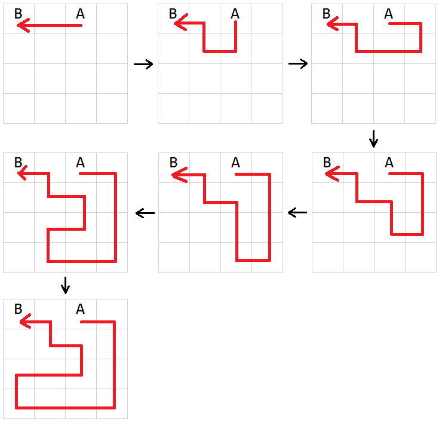
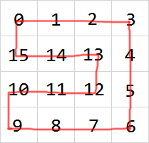
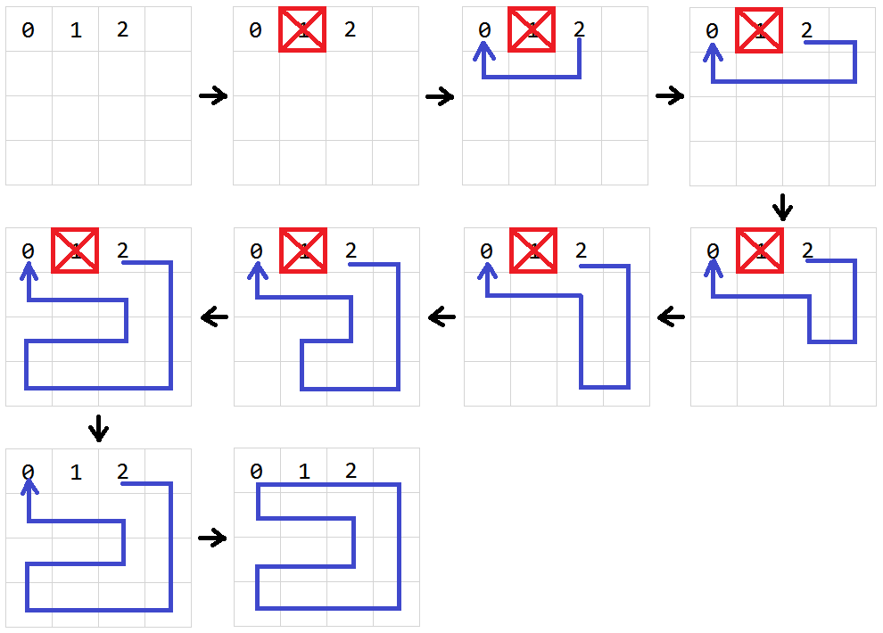
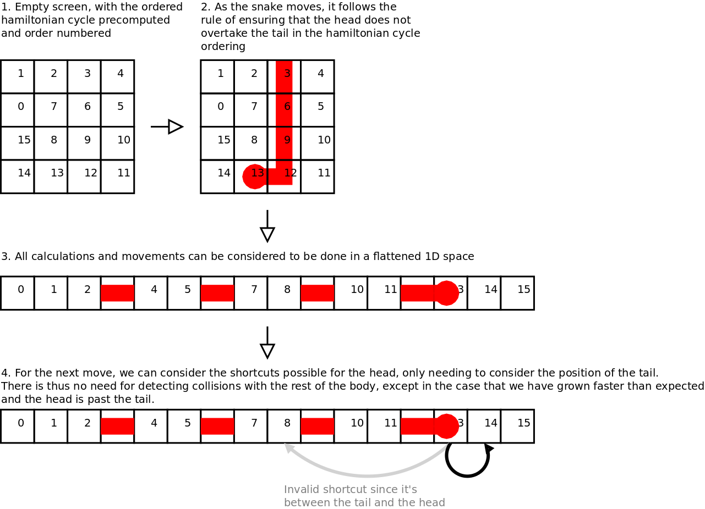
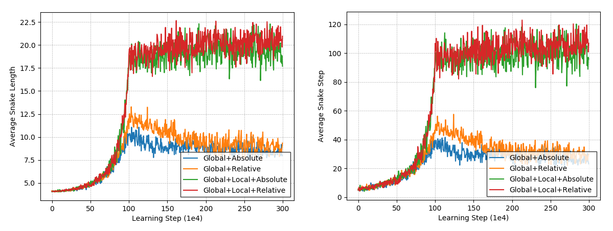
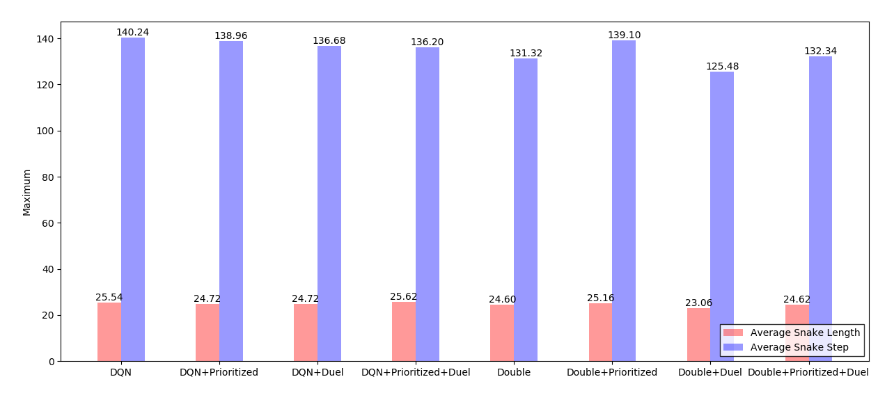

Algorithms
Overview
In the game, the snake is allowed to move inside a 2-dimensional playing field (game map) surrounded by walls. At each discrete interval (a time step), the snake must move forward, turn left, or turn right as the game requires that the snake cannot stop moving. The game will randomly generate and place one piece of food on the game map whenever there is no food on the map. When the snake moves onto a piece of food, the food is eaten and the snake’s length grows by one. The goal is to eat as many pieces of food as possible without ending the game by colliding the snake into itself or the walls.
In our game settings, the game map will be 8 units tall and 8 units wide consisting of 64 available spaces. The snake will initially begin at the top-left corner, facing right, with an initial length of 4 units. Therefore, the snake can eat at most 60 pieces of food before filling up the entire map.
Solvers
All the problem solvers are subclasses of
BaseSolver. The subclasses override
BaseSolver.next_direc()
to return the next moving direction of the snake.
Path Solver
Path Solver provides methods to find the shortest path and the longest path from the snake’s head to other points on the game map. It does not directly decide the next moving direction of the snake, but help other solvers to work it out.
Shortest Path
Path Solver uses breadth-first search to find the shortest path. Intuitively, we expect the path to be as straight as possible so there will be less scattered empty points on the map. The trick for implementation is that during each iteration, the adjacent point in the last traversed direction will be traversed first.
Longest Path
The longest path problem on the game map (i.e., a cyclic, undirected and unweighted graph) is NP-hard. Path Solver uses a heuristic algorithm to find suboptimal solutions.
Suppose we want to find the longest path from point A to point B on a 4*4 game map. The solver first finds the shortest path between the two points and then extends each pair of path pieces until no extensions can be found:

Greedy Solver
Greedy Solver directs the snake to eat the food along the shortest path if it thinks the snake will be safe. Otherwise, it makes the snake wander around until a safe path can be found. As it needs paths searching, it depends on Path Solver.
Concretely, to find the snake S1’s next moving direction D, the solver follows the steps below:
-
Compute the shortest path P1 from S1’s head to the food. If P1 exists, go to step 2. Otherwise, go to step 4.
-
Move a virtual snake S2 (the same as S1) to eat the food along path P1.
-
Compute the longest path P2 from S2’s head to its tail. If P2 exists, let D be the first direction in path P1. Otherwise, go to step 4.
-
Compute the longest path P3 from S1’s head to its tail. If P3 exists, let D be the first direction in path P3. Otherwise, go to step 5.
-
Let D be the direction that makes S1 the farthest from the food.
Hamilton Solver
Hamilton Solver builds a Hamiltonian cycle on the game map first and then directs the snake to eat the food along the cycle path. To reduce the average steps the snake takes to success, it enables the snake to take shortcuts if possible. Again, it depends on Path Solver to find the longest path.
Build a Hamiltonian Cycle
Suppose we want to build a Hamiltonian cycle on a 4*4 map. Then our goal is to assign the path index to each point on the map. The image below shows a possible Hamiltonian cycle:

To construct the cycle above, first we fix the point 0, 1 and 2 (considering the snake’s initial head and bodies are 2, 1, 0, respectively). Then we make point 1 unreachable and generate the longest path from point 2 to point 0. Finally, we join the starting point 2 and the ending point 0, which forms a Hamiltonian cycle:

Note that this algorithm is not a general way to find a Hamiltonian cycle. It only works when the initial positions of the snake’s head and bodies are similar to the situation described above.
Take Shortcuts
Following a fixed cycle path all the time is tedious and time-consuming. Hamilton Solver directs the snake to take shortcuts according to the rules below[1].

DQN Solver
DQN Solver uses a deep reinforcement learning algorithm named Deep Q-Network[2] (DQN) to solve the problem. DQN has three optimization algorithms-Double DQN[3], Prioritized Experience Replay[4] and Dueling Network Structure[5]. We are not going to reiterate these algorithms here. For those who are interested or researching in deep reinforcement learning, DQN Solver provides performance comparisons for different combinations of these algorithms on training an agent for the Snake game.
In DQN, we use a deep neural network to estimated the value function Q. The input for the network is the state of the agent while the output is the expected reward of each action the agent can take. The policy for the agent is epsilon-greedy, which gives the agent chances to exploit its environment.
State Vector
The state vector for the Snake game has two parts. The first part is the global state vector, which stores the contents of each point on the map. Each point has 4 types of contents-snake head, snake body, empty and food. As this is a discrete feature, we can binarize it so that each point can be represented as an integer vector of length 4. One and only one element in the vector is 1, indicating the corresponding type of the point, while the other three elements are 0. Under our game settings, the global state vector can be thought as an 8*8*4 image.
The second part is the local state vector, which tells the snake its surrounding situation. The vector contains 3 values (0 or 1), indicating whether the point in front/left/right of the snake head is dangerous (i.e., wall or body in the direction).
Actions
There are two ways to direct the snake. The first one is relative direction, which means that the snake can move forward, leftward or rightward since these directions are “relative” to the snake’s current moving direction. Under relative direction, the global state vector is also relative. For example, when the snake is moving towards the right side of the map, the first element in the global state vector is the element at the top-right corner of the map.
Comparing to relative direction, the other way to direct the snake is absolute direction. Under absolute direction, the snake can move leftward, upward, rightward and downward on the map. The first element of the global state vector is always the element at the top-left corner of the map. Moreover, the local state vector under absolute direction will have 4 values since there are 4 actions the snake can take.
Theoretically, using relative direction is more efficient since the game map is symmetric both horizontally and vertically. This is proved by experiments (we trained 4 models in 3000000 iterations using natural DQN algorithm):

From the image above we can figure out that using relative direction is better than absolute direction because the red line and the orange line are higher than the green line and the blue line, respectively. Moreover, local state vector is conducive to the training performance of the agent, as the red and the green line are higher than the orange and the blue line.
Comparisons
The three optimization algorithms can be combined to optimize DQN since they are from three different perspectives. There are 8 different combinations in total and the performance are shown below (3000000 iterations, all trained with global and local state in relative direction):

Among the 8 combinations, DQN + Prioritized + Duel achieves the best performance because it receives the highest average snake length. Comparing to natural DQN, not only does it gets higher average snake length, but also lower average snake step, indicating that the snake agent trained by DQN + Prioritized + Duel is more efficient in consuming food.
Attachments
Please refer to my presentation for more details (e.g., environment design, network structure, etc).
References
-
Tapsell, J., Nokia 6110 Part 3 – Algorithms. (2015). [Link]
-
Mnih, V., Kavukcuoglu, K., Silver, D., Rusu, A. A., Veness, J., Bellemare, M. G., et al. (2015). Human-level control through deep reinforcement learning. Nature, 518(7540), 529-533. [Link]
-
van Hasselt, H., Guez, A., Silver, D. (2016). Deep reinforcement learning with double q-learning. Proceedings of the Thirtieth AAAI Conference on Artificial Intelligence, 2094-2100. [Link]
-
Schaul, T., Quan, J., Antonoglou, I., Silver, D. (2016). Prioritized experience replay. ICLR. [Link]
-
Wang, Z., Schaul, T., Hessel, M., van Hasselt, H., Lanctot, M., de Freitas, N. (2016). Dueling network architectures for deep reinforcement learning. ICML. [Link]